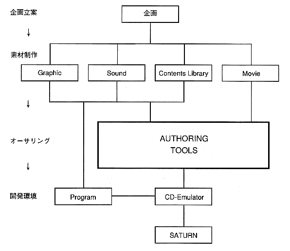

Return to menu | Go to next page
-
1. Overall process overview
-
Introduction
By using the - authoring tool, you can create titles using video.
If the video is not used during the opening, ending, or game, no authoring tool is required, but it is a powerful tool in the simulation at the planning stage. It is also powerful for entertainment software production.
-
■ Overall process diagram
- The authoring tools are positioned in the overall Saturn software development process as follows:

Return to menu | Go to next page